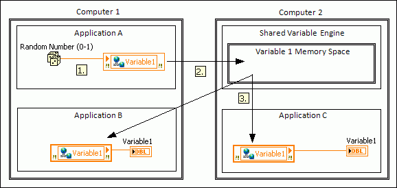

Network-published shared variables publish data over a network through a software component called the Shared Variable Engine (SVE). The SVE is installed as a service on your computer when you install LabVIEW, and it manages shared variable updates using a proprietary technology called the NI Publish-Subscribe Protocol (NI-PSP). The term publish-subscribe describes a model of communication where writers, or publishers, do not send data to specific readers, or subscribers. Rather, publishers send updates to a server, in this case the SVE, and subscribers receive those updates from the server.
|
Note��To transmit network-published shared variables through firewalls or routers, you must configure firewalls and network address translating (NAT) routers. |
The following figure uses Shared Variable nodes to demonstrate how the SVE manages shared variable updates with NI-PSP.
|
Note��The Shared Variable node is one of many programming tools you can use to read and write shared variables. |

The following events occur in the previous figure.
|
Note��To read and write a shared variable over a network, you first must make that shared variable available on the network. |
In the previous figure, although Computer 1 hosts a writer of Variable 1 in Application A and a reader of Variable 1 in Application B, Application A cannot write a new value directly to Application B. Instead, Application A must send a request to the SVE on Computer 2 to update every application that subscribes to Variable 1. Therefore, the latency involved in these updates makes shared variables ideal for publishing latest values only. To stream data continuously, use network streams.
You must deploy shared variables to the SVE to read and write those shared variables over a network. When you deploy a shared variable, LabVIEW deploys the project library that contains the shared variable, including all of the other shared variables in the project library, to the SVE. The SVE then creates a memory space for that project library that includes memory spaces for each shared variable.
Any data item that LabVIEW publishes over a network using NI-PSP is an NI-PSP data item. Common NI-PSP data items include the following:
LabVIEW identifies NI-PSP data items with a network path that consists of the name of the computer the data item resides on, the name of the process the data item resides in, and the name of the data item. For example, the network path \\computer1\mylib\myvariable identifies a shared variable named myvariable in the mylib project library on a computer named computer1. If the shared variable exists in a sub-project library named mysublib, the shared variable path includes the sub-project library: \\computer1\mylib\mysublib\myvariable.
Specify the network path of an NI-PSP data item, or browse to an NI-PSP data item, when reading and writing shared variables with existing data sources or controls and indicators.
The SVE reports server status updates and critical errors, such as invalid process configurations. You can view these errors in the Windows Event Viewer. In the Windows Control Panel, navigate to the Event Viewer in the Administrative Tools directory. The exact location of the Administrative Tools directory varies depending on which version of Windows you use.